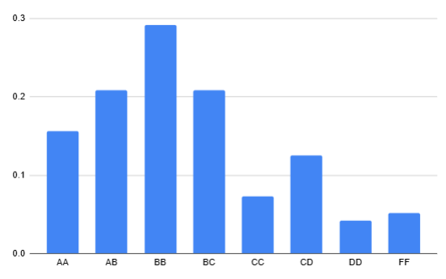

Communication Systems
Grading

Grading :Grading :previous offering prof. Kumar Apaih (general trend is the same)
Dual Degree(S2)
Credit Structure
2 Quizzes — 12.5% each
1 Midsem — 35%
1 Endsem — 40%
B.Tech(S1)
Resources
Reference Book-Lathi(Analog)
Reference Book-(Digital)
Course Drive
Notes_Pushkar
↑